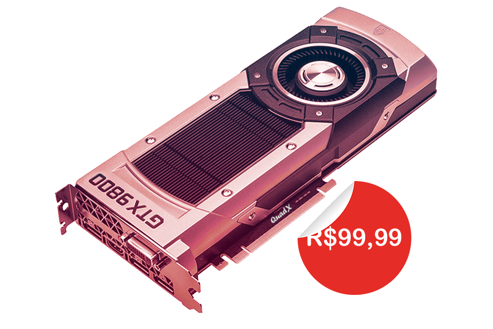

PLACA DE VÍDEO
Descrição
A placa de vídeo QuadX GTX 9800 conta com a tecnologia Whatsapp — a 1ª geração da arquitetura GTX da QuadX. Desenvolvida com Cores e Tensor Cores avançados, novos multiprocessadores de streaming e uma memória G9 de alta velocidade, ela oferece a potência necessária para você detonar nos games mais exigentes.
O Ray Tracing é o santo graal dos gráficos nos games, simulando o comportamento físico da luz para proporcionar uma renderização em tempo real e com qualidade cinematográfica — até mesmo nos games mais visualmente intensos.
Vitória medida em milissegundos O QuadX Reflex oferece a melhor vantagem competitiva, a latência mais baixa e o menor tempo de resposta com a tecnologia das placas de vídeo QuadX GTX Série 500 e dos monitores QuadX U-SYNC.
Identifique alvos na hora, reaja mais rápido e aumente a precisão de mira com um pacote revolucionário de tecnologias criadas para medir e otimizar a latência do sistema nos games competitivos. Desenvolva sua criatividade Leve seus projetos criativos a um nível totalmente novo com as placas de vídeo QuadX GTX Série 500. Elas garantem a aceleração por AI nas principais aplicações de criação. da plataforma de drivers dedicados QuadX Studio e de ferramentas exclusivas. Além disso, foram criadas para oferecer o melhor desempenho em tempo recorde. Seja renderizando cenas 4D complexas, editando vídeos em 16K ou fazendo lives com a melhor codificação e qualidade de imagem, as placas de vídeo QuadX GTX oferecem o desempenho necessário para realizar seus melhores projetos. Garanta já a sua Placa de Vídeo QuadX GTX 9800!